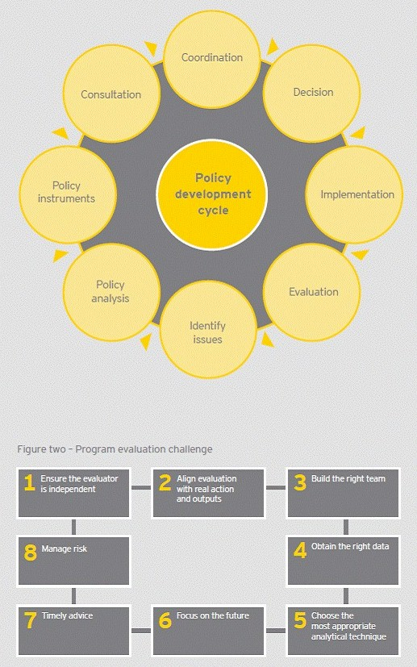

I recently attended the David Solomon Lecture in Brisbane as part of Right to Information Day. David Solomon designed the freedom of information architecture of Qld and Anna Bligh asked him to do it and more or less implemented what he recommended. So good on her. He is a Good Guy. Anyway, the lecture was given by Don Watson and it was a fun listen - though nothing surprising if you'd dipped into his books on the subject of the mangulation of the language.I must admit that the highlight for me was the consultants who'd been hired to diagnose why the Anglican Church had lost some umpteen hundred millions in the GFC. The consultants reported that there was an "endemic culture of forgiveness" reaching right up to top management. I laughed.
Anyway, I just sent a former colleague an email, and then realised it should be grist for Don's mill and sent it to him. Then I thought it could become grist here as well.
I used to be confused. I used not to REALLY know what public policy was all about.
But now, with DIAGRAMS® I can go to work every day knowing what my KPIs are.
This is the diagram that did it for me.
I’m only hoping that it can do it for your organisation. God knows you people need it.
Just remember.
- Ensure the evaluator is independent [fair enough too - except sometimes it's not a good idea, but we'll leave that to one side. Ensuring that all evaluations are objective should look pretty good on your self-evaluation.]
- Align evaluation with real action and outputs [ie, not pretend. Can’t stress this one enough – pretend is never good enough. You’re in the real world now]
- Build the right team [ie – not the wrong team. Note this is not as important as 2, but it’s pretty damn important. For instance Hitler was crazy enough. He needed sound chaps to help with the war effort – not more nutters like Goebels, Goering, Hess, Himmler and something simmler]
- Obtain the right data [ie – not the wrong data. Note this is not as important as 2 but more important than 3. Remember – if you’ve got the wrong data, you’re on the wrong tram]
- Timely advice [ie, not too late. For instance, if you get advice on building some major public road after you’ve built it, it can be quite expensive to move it, or even to unbuild it – if your advice shows that it shouldn’t have been built in the first place. All this could have been avoided if your advice was timely - capiche? If not see rule 6. If you didn't come good on rule 5, you're unlikely to know where rule 6 is. Don't worry you're bound to run into it]
- (That's rule 6). Focus on the future [ie not the past. The problem with the past is that it cannot be changed. You are a change manager. All change in the past has already been managed – unless you’re in fantasy land – see rule 2.]
- Manage risk [ie do not just sit around eating sandwiches and so on. Manage risk as in – you know managing risk – it really shouldn't be that hard.]
- Choose the most appropriate analytical technique [ie if you are building a bridge and you need to add up all the weight that will be on the bridge, don’t use subtraction – just throw subtraction away. Same goes for multiplication and division. Stick to adding up. That's for bridges. It's different for inventory - when people are nicking stuff from your stores, subtraction comes in handy. It’s easy when you get the hang of it].
- There are not nine points in the program evaluation challenge. Please pay attention. And you've not followed the order - which goes clockwise (for obvious reasons - we're moving forward here.)
- There is a blank space in the - well the 'space'. (Clue it's in the middle of the eight boxes). This space is handy because it's the 'improvise' space. It's the sandpit, the skunkworks. If you want to do something that's not indicated in the eight boxes, do it. It is very important in strategic planning that anything that any of these guides say, can be ignored - pretty much any time you like. It's important to be flexible. If you can't think inside the first eight boxes, think inside the ninth one - which will really let you think outside the box - well inside the box really- but it's a special 'thinking outside the box' box. A win win. This is different to the grey bit in the circle. This is really just, well no-one really knows what it is. It's just filling space. That's why it's dark grey. Don't write in it (that's why it's dark grey), and try not to think about it.
Regards,
Nicholas Gruen
Consultant and changed man. (if it worked for me, it can work for you)
http://www.youtube.com/watch?v=jzG293KCitk
A-ha! Now I understand why 'modern' managers are constantly 'restructuring' everything: change-management is a LOOP. The 'end' is always the 'beginning'. Talk about the Eternal Return.
- Nietzsche, The Gay Science, no.341.
Throw a six to start.
Ha, great post. I can't stand this sort of vapid managerial bullshit. I think Don Watson does a very good job of skewering this nonsense, and his critique is all the more powerful for the fact that he's seen the "policy development" process up close.
public servants love this crap
I gotta say, although I agree that there's so much vapid bullshit going on, I really disliked Watson's analysis.
Watson seemed to think that the problem can be solved by individuals suddenly deciding to stop the bullshit, which reminded me of certain greenies only addressing individuals on a moral level.
The problem is societal. The reason people speak bullshit is because they have to. People have to sound professional these days -- how else to justify those three years at university learning business?
http://www.youtube.com/watch?v=tNfGyIW7aHM
Antonios, I agree with you. There is still the question of why 'society' requires bullshit. And individuals in positions of power can often not talk bullshit. It's easier to talk bullshit, but it's not impossible to not do so.
And then lots of people just take to bullshit like a duck to water. There are lots of telltale signs. You say 'space' "we're doing some work in this 'space'" instead of "in this area". Innocuous enough, but whilst some of the problem exists at the level of power, it's also a socially transmitted disease which travels through the ether like a virus. At that level one is individually responsible. I deliberately try to avoid the latest buzzword like 'space' unless it adds something. Often new expressions do add something, but often they obfuscate and pander to striking a social pose.
Jacques
I'm not sure what Nicholas would say, but I agree that at least some of the steps in the satirised policy development process diagram, while seemingly blindingly obvious, are nevertheless worth pointing out in a systematic, simple diagrammatic way. Having been involved in aspects of policy development in higher education over a decade now, I can say that these steps are frequently not followed, often with serious consequences.
The real problem with the depicted steps as described in the diagram is their absurdly question-begging nature, which is why I posted the link to the Monty Python "How to Do It" sketch. Moreover, in fairness to whoever was the presenter of the diagram Nicholas has taken the piss out of, it's conceivable that the question-begging aspects of the diagram were explained or at least mitigated by the presenter's accompanying explanations. Diagrams that avoid oversimplification often end up looking like a spaghetti monster.
One of the big lies consulting firms make is that if you "follow the process", success will ensue, hence the nonsensical Visio diagrams that describe "the process".
People and thinking are almost inconsequential.
Joel Spolsky has written a brilliant article about it where he describes people following "the process" as equivalent to McDonalds employees mindlessly creating McDonalds food.
http://www.joelonsoftware.com/articles/fog0000000024.html
Nicholas,
"Space" for "area" is old hat. People were doing this at a management consulting firm I worked for ten years ago. I could never bring myself to say it, which was a bit snobby really. I mean, what harm does it do?
I would imagine the latest buzzword is now to say "area" when you mean "space" (meaning "area").
I agree that Watson is not strong on the cure for bullshit, but he's very good at diagnosing the disease.
I met with some senior public servants the other day and was struck by how bullshit-free their speech was. I suppose that when you're so senior that you're more or less autonomous, you have less need to obfuscate your meaning and try to inflate your own status.